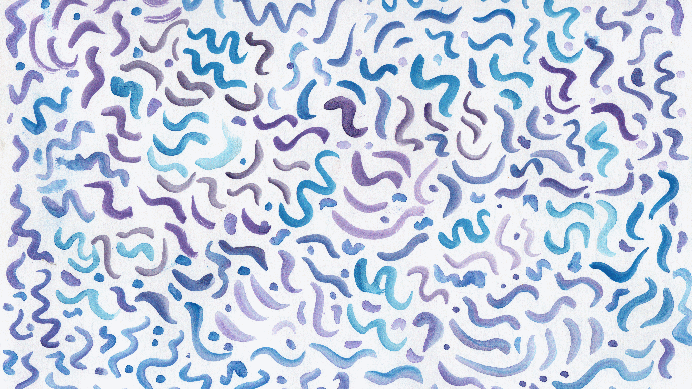
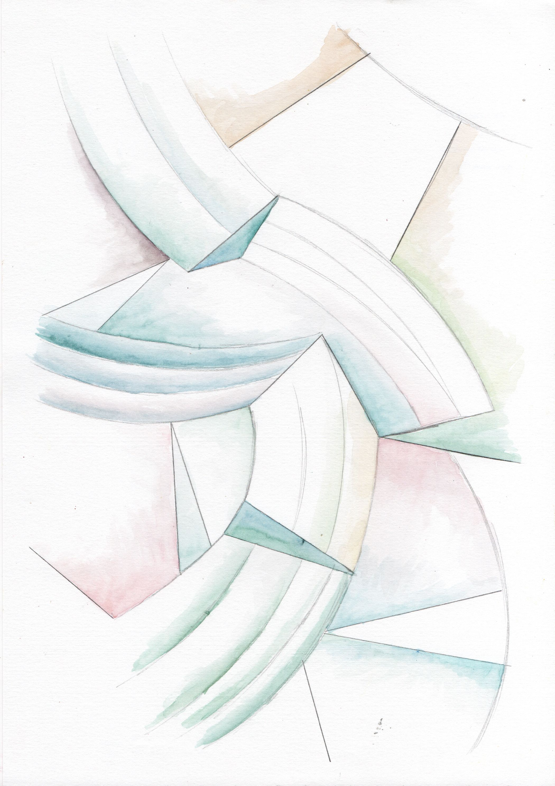

Sobre mim
Formado pela Universidade Federal Fluminense em Rio das Ostras - RJ.
- Clínica fenomenológico existencial
- Psicoterapia Online - Adolescentes e Adultos
- Psicólogo - CRAS Lagomar, Macaé-RJ
Áreas de interesse
- Raça e negritude
- Autismo, TDAH e neurodivergências
- Gênero, sexualidade e vivências LGBT
- Estresse e Ansiedade
Leituras Recomendadas
Uma futura página com artigos, livros e outras leituras que recomendo.

Outros Contatos / Recomendações
Profissionais e psicólogos que confio e recomendo.
